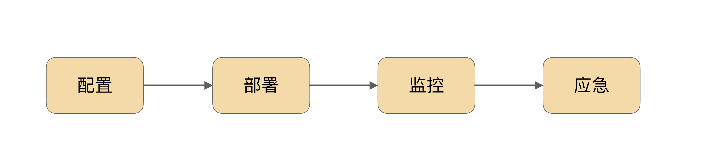
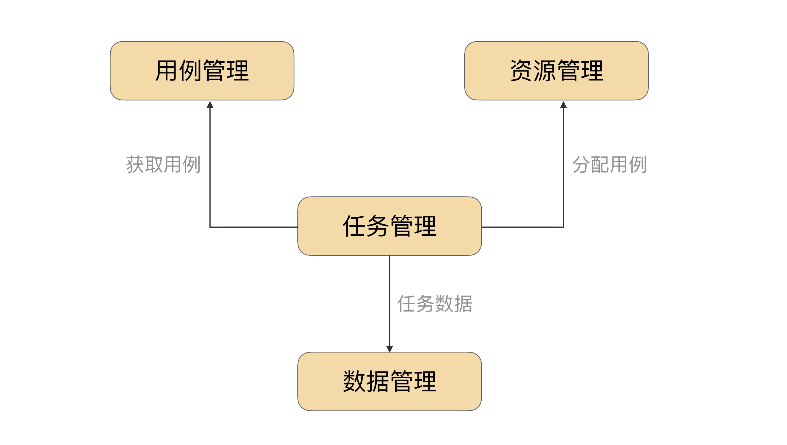
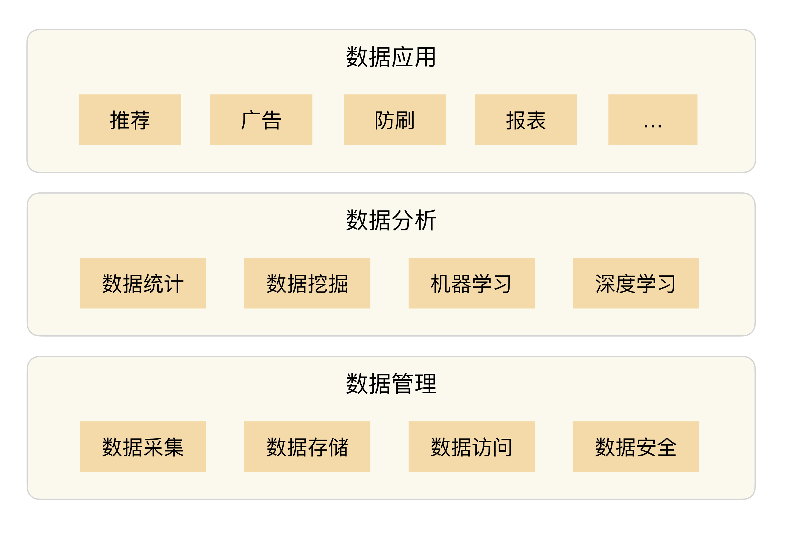
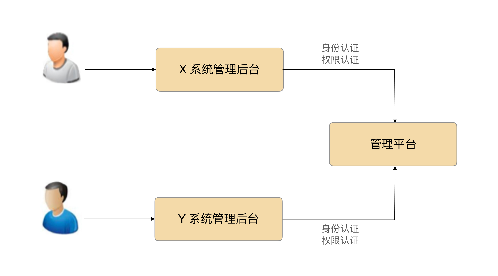

- 00 开篇词 照着做，你也能成为架构师！.md.html
- 01 架构到底是指什么？.md.html
- 02 架构设计的历史背景.md.html
- 03 架构设计的目的.md.html
- 04 复杂度来源：高性能.md.html
- 05 复杂度来源：高可用.md.html
- 06 复杂度来源：可扩展性.md.html
- 07 复杂度来源：低成本、安全、规模.md.html
- 08 架构设计三原则.md.html
- 09 架构设计原则案例.md.html
- 10 架构设计流程：识别复杂度.md.html
- 11 架构设计流程：设计备选方案.md.html
- 12 架构设计流程：评估和选择备选方案.md.html
- 13 架构设计流程：详细方案设计.md.html
- 14 高性能数据库集群：读写分离.md.html
- 15 高性能数据库集群：分库分表.md.html
- 16 高性能NoSQL.md.html
- 17 高性能缓存架构.md.html
- 18 单服务器高性能模式：PPC与TPC.md.html
- 19 单服务器高性能模式：Reactor与Proactor.md.html
- 20 高性能负载均衡：分类及架构.md.html
- 21 高性能负载均衡：算法.md.html
- 22 想成为架构师，你必须知道CAP理论.md.html
- 23 想成为架构师，你必须掌握的CAP细节.md.html
- 24 FMEA方法，排除架构可用性隐患的利器.md.html
- 25 高可用存储架构：双机架构.md.html
- 26 高可用存储架构：集群和分区.md.html
- 27 如何设计计算高可用架构？.md.html
- 28 业务高可用的保障：异地多活架构.md.html
- 29 异地多活设计4大技巧.md.html
- 30 异地多活设计4步走.md.html
- 31 如何应对接口级的故障？.md.html
- 32 可扩展架构的基本思想和模式.md.html
- 33 传统的可扩展架构模式：分层架构和SOA.md.html
- 34 深入理解微服务架构：银弹 or 焦油坑？.md.html
- 35 微服务架构最佳实践 - 方法篇.md.html
- 36 微服务架构最佳实践 - 基础设施篇.md.html
- 37 微内核架构详解.md.html
- 38 架构师应该如何判断技术演进的方向？.md.html
- 39 互联网技术演进的模式.md.html
- 40 互联网架构模板：存储层技术.md.html
- 41 互联网架构模板：开发层和服务层技术.md.html
- 42 互联网架构模板：网络层技术.md.html
- 43 互联网架构模板：用户层和业务层技术.md.html
- 44 互联网架构模板：平台技术.md.html
- 45 架构重构内功心法第一式：有的放矢.md.html
- 46 架构重构内功心法第二式：合纵连横.md.html
- 47 架构重构内功心法第三式：运筹帷幄.md.html
- 48 再谈开源项目：如何选择、使用以及二次开发？.md.html
- 49 谈谈App架构的演进.md.html
- 50 架构实战：架构设计文档模板.md.html
- 51 如何画出优秀的软件系统架构图？.md.html
- 加餐｜业务架构实战营开营了.md.html
- 加餐｜单服务器高性能模式性能对比.md.html
- 加餐｜扒一扒中台皇帝的外衣.md.html
- 如何高效地学习开源项目 华仔，放学别走！ 第3期.md.html
- 新书首发 《从零开始学架构》.md.html
- 架构专栏特别放送 华仔，放学别走！ 第2期.md.html
- 架构专栏特别放送 华仔，放学别走！第1期.md.html
- 架构师必读书单 华仔，放学别走！ 第5期.md.html
- 架构师成长之路 华仔，放学别走！ 第4期.md.html
- 结束语 坚持，成就你的技术梦想.md.html
- 捐赠
44 互联网架构模板：平台技术
当业务规模比较小、系统复杂度不高时，运维、测试、数据分析、管理等支撑功能主要由各系统或者团队独立完成。随着业务规模越来越大，系统复杂度越来越高，子系统数量越来越多，如果继续采取各自为政的方式来实现这些支撑功能，会发现重复工作非常多。因此我们自然而然就会想到将这些支撑功能做成平台，避免重复造轮子，减少不规范带来的沟通和协作成本。
今天，我就来聊聊互联网架构模板的“平台”技术。由于每个平台本身都是一个庞大的体系，专栏只是介绍一下平台的核心职责和关键设计点，具体细节就不详细展开了。
运维平台
运维平台核心的职责分为四大块：配置、部署、监控、应急，每个职责对应系统生命周期的一个阶段，如下图所示：

- 配置：主要负责资源的管理。例如，机器管理、IP地址管理、虚拟机管理等。
- 部署：主要负责将系统发布到线上。例如，包管理、灰度发布管理、回滚等。
- 监控：主要负责收集系统上线运行后的相关数据并进行监控，以便及时发现问题。
- 应急：主要负责系统出故障后的处理。例如，停止程序、下线故障机器、切换IP等。
运维平台的核心设计要素是“四化”：标准化、平台化、自动化、可视化。
1.标准化
需要制定运维标准，规范配置管理、部署流程、监控指标、应急能力等，各系统按照运维标准来实现，避免不同的系统不同的处理方式。标准化是运维平台的基础，没有标准化就没有运维平台。
如果某个系统就是无法改造自己来满足运维标准，那该怎么办呢？常见的做法是不改造系统，由中间方来完成规范适配。例如，某个系统对外提供了RESTful接口的方式来查询当前的性能指标，而运维标准是性能数据通过日志定时上报，那么就可以写一个定时程序访问RESTful接口获取性能数据，然后转换为日志上报到运维平台。
2.平台化
传统的手工运维方式需要投入大量人力，效率低，容易出错，因此需要在运维标准化的基础上，将运维的相关操作都集成到运维平台中，通过运维平台来完成运维工作。
运维平台的好处有：
- 可以将运维标准固化到平台中，无须运维人员死记硬背运维标准。
- 运维平台提供简单方便的操作，相比之下人工操作低效且容易出错。
- 运维平台是可复用的，一套运维平台可以支撑几百上千个业务系统。
3.自动化
传统手工运维方式效率低下的一个主要原因就是要执行大量重复的操作，运维平台可以将这些重复操作固化下来，由系统自动完成。
例如，一次手工部署需要登录机器、上传包、解压包、备份旧系统、覆盖旧系统、启动新系统，这个过程中需要执行大量的重复或者类似的操作。有了运维平台后，平台需要提供自动化的能力，完成上述操作，部署人员只需要在最开始单击“开始部署”按钮，系统部署完成后通知部署人员即可。
类似的还有监控，有了运维平台后，运维平台可以实时收集数据并进行初步分析，当发现数据异常时自动发出告警，无须运维人员盯着数据看，或者写一大堆“grep + awk + sed”来分析日志才能发现问题。
4.可视化
运维平台有非常多的数据，如果全部通过人工去查询数据再来判断，则效率很低。尤其是在故障应急时，时间就是生命，处理问题都是争分夺秒，能减少1分钟的时间就可能挽回几十万元的损失，可视化的主要目的就是为了提升数据查看效率。
可视化的原理和汽车仪表盘类似，如果只是一连串的数字显示在屏幕上，相信大部分人一看到一连串的数字，第一感觉是眼花，而且也很难将数据与具体的情况联系起来。而有了仪表盘后，通过仪表盘的指针偏离幅度及指针指向的区域颜色，能够一目了然地看出当前的状态是低速、中速还是高速。
可视化相比简单的数据罗列，具备下面这些优点：
- 能够直观地看到数据的相关属性，例如，汽车仪表盘中的数据最小值是0，最大是100，单位是MPH。
- 能够将数据的含义展示出来，例如汽车仪表盘中不同速度的颜色指示。
- 能够将关联数据整合一起展示，例如汽车仪表盘的速度和里程。
测试平台
测试平台核心的职责当然就是测试了，包括单元测试、集成测试、接口测试、性能测试等，都可以在测试平台来完成。
测试平台的核心目的是提升测试效率，从而提升产品质量，其设计关键就是自动化。传统的测试方式是测试人员手工执行测试用例，测试效率低，重复的工作多。通过测试平台提供的自动化能力，测试用例能够重复执行，无须人工参与，大大提升了测试效率。
为了达到“自动化”的目标，测试平台的基本架构如下图所示：

1.用例管理
测试自动化的主要手段就是通过脚本或者代码来进行测试，例如单元测试用例是代码、接口测试用例可以用Python来写、可靠性测试用例可以用Shell来写。为了能够重复执行这些测试用例，测试平台需要将用例管理起来，管理的维度包括业务、系统、测试类型、用例代码。例如，网购业务的订单系统的接口测试用例。
2.资源管理
测试用例要放到具体的运行环境中才能真正执行，运行环境包括硬件（服务器、手机、平板电脑等）、软件（操作系统、数据库、Java虚拟机等）、业务系统（被测试的系统）。
除了性能测试，一般的自动化测试对性能要求不高，所以为了提升资源利用率，大部分的测试平台都会使用虚拟技术来充分利用硬件资源，如虚拟机、Docker等技术。
3.任务管理
任务管理的主要职责是将测试用例分配到具体的资源上执行，跟踪任务的执行情况。任务管理是测试平台设计的核心，它将测试平台的各个部分串联起来从而完成自动化测试。
4.数据管理
测试任务执行完成后，需要记录各种相关的数据（例如，执行时间、执行结果、用例执行期间的CPU、内存占用情况等），这些数据具备下面这些作用：
- 展现当前用例的执行情况。
- 作为历史数据，方便后续的测试与历史数据进行对比，从而发现明显的变化趋势。例如，某个版本后单元测试覆盖率从90%下降到70%。
- 作为大数据的一部分，可以基于测试的任务数据进行一些数据挖掘。例如，某个业务一年执行了10000个用例测试，另外一个业务只执行了1000个用例测试，两个业务规模和复杂度差不多，为何差异这么大？
数据平台
数据平台的核心职责主要包括三部分：数据管理、数据分析和数据应用。每一部分又包含更多的细分领域，详细的数据平台架构如下图所示：

1.数据管理
数据管理包含数据采集、数据存储、数据访问和数据安全四个核心职责，是数据平台的基础功能。
- 数据采集：从业务系统搜集各类数据。例如，日志、用户行为、业务数据等，将这些数据传送到数据平台。
- 数据存储：将从业务系统采集的数据存储到数据平台，用于后续数据分析。
- 数据访问：负责对外提供各种协议用于读写数据。例如，SQL、Hive、Key-Value等读写协议。
- 数据安全：通常情况下数据平台都是多个业务共享的，部分业务敏感数据需要加以保护，防止被其他业务读取甚至修改，因此需要设计数据安全策略来保护数据。
2.数据分析
数据分析包括数据统计、数据挖掘、机器学习、深度学习等几个细分领域。
- 数据统计：根据原始数据统计出相关的总览数据。例如，PV、UV、交易额等。
- 数据挖掘：数据挖掘这个概念本身含义可以很广，为了与机器学习和深度学习区分开，这里的数据挖掘主要是指传统的数据挖掘方式。例如，有经验的数据分析人员基于数据仓库构建一系列规则来对数据进行分析从而发现一些隐含的规律、现象、问题等，经典的数据挖掘案例就是沃尔玛的啤酒与尿布的关联关系的发现。
- 机器学习、深度学习：机器学习和深度学习属于数据挖掘的一种具体实现方式，由于其实现方式与传统的数据挖掘方式差异较大，因此数据平台在实现机器学习和深度学习时，需要针对机器学习和深度学习独立进行设计。
3.数据应用
数据应用很广泛，既包括在线业务，也包括离线业务。例如，推荐、广告等属于在线应用，报表、欺诈检测、异常检测等属于离线应用。
数据应用能够发挥价值的前提是需要有“大数据”，只有当数据的规模达到一定程度，基于数据的分析、挖掘才能发现有价值的规律、现象、问题等。如果数据没有达到一定规模，通常情况下做好数据统计就足够了，尤其是很多初创企业，无须一开始就参考BAT来构建自己的数据平台。
管理平台
管理平台的核心职责就是权限管理，无论是业务系统（例如，淘宝网）、中间件系统（例如，消息队列Kafka），还是平台系统（例如，运维平台），都需要进行管理。如果每个系统都自己来实现权限管理，效率太低，重复工作很多，因此需要统一的管理平台来管理所有的系统的权限。
权限管理主要分为两部分：身份认证、权限控制，其基本架构如下图所示。

1.身份认证
确定当前的操作人员身份，防止非法人员进入系统。例如，不允许匿名用户进入系统。为了避免每个系统都自己来管理用户，通常情况下都会使用企业账号来做统一认证和登录。
2.权限控制
根据操作人员的身份确定操作权限，防止未经授权的人员进行操作。例如，不允许研发人员进入财务系统查看别人的工资。
小结
今天我为你讲了互联网企业常见的平台以及基本的平台功能，希望对你有所帮助。
这就是今天的全部内容，留一道思考题给你吧，运维平台或者测试平台，有的公司是由中间件团队负责开发，有的是运维和测试团队自己开发，你觉得两种方式各有什么优缺点，分别适用什么场景呢？
© 2019 - 2023 Liangliang Lee. Powered by gin and hexo-theme-book.